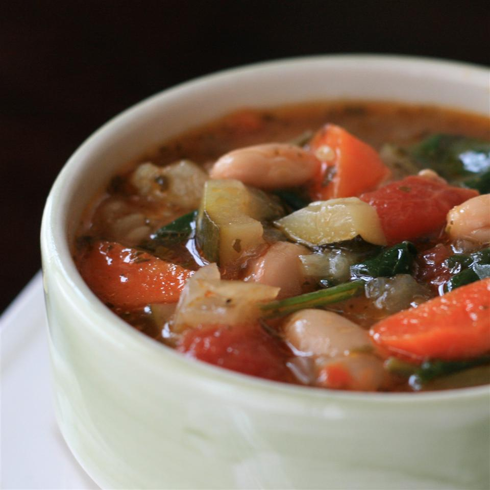

Tuscan bean soup

A wonderful soup to enjoy anytime
This soup features an incredible bouquet of vegetables
If you are into soups featuring lots of veggies, then get ready to cook!
Ingredients
- 1/4 cup olive oil
- 1 large onion, sliced
- 4 carrots, chopped
- 2 stalks celery, chopped
- 4 cloves garlic, crushed
- 2 zucchini, sliced
- 4 (14 ounce) cans vegetable stock
- 1 can cannellini beans
- 1 can chopped tomatoes
- 1 cup chicken stock
- 1/4 cup pesto
Steps
- Heat 1/4 cup olive oil in a large stockpot
- Saute onion, carrots, celery and garlic until browned
- Add zucchini and cook until softened, 3 to 4 minutes
- Stir vegetable stock, cannellini beans, chopped tomatoes, chicken stock and pesto into vegetable mixture
- Bring to a boil
- Reduce heat and simmer until vegetables are tender, 30 minutes
- Season with salt and pepper